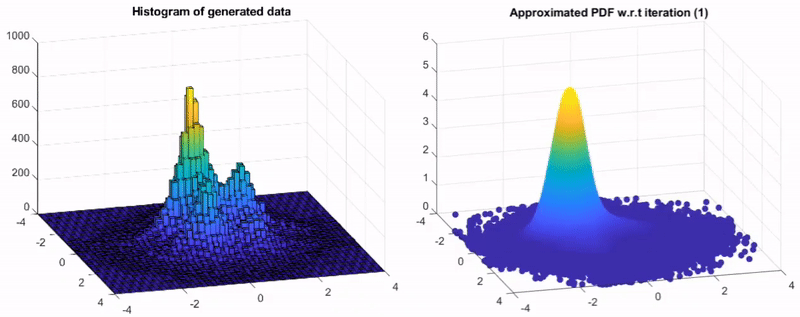

Publications
-
For a complete list of publications please visit
- Google Scholar
Research Projects
My research agenda is organized around four major directions:
1. The development of theoretical foundations for machine learning models and algorithms.
Graphical illustration of the PDF estimation technique presented at ICASSP 2021
Reference
L. P. Damasceno, C. C. Cavalcante, T. Adali, and Z. Boukouvalas, "Independent Vector Analysis using Semi-Parametric Density Estimation via Multivariate Entropy Maximization"

2. The development of human assisted machine learning and natural language processing frameworks to design, prototype, and evaluate an end-to-end system for the synthesis, analysis, and handling of energetic materials.
Related video from the 28th European Signal Processing Conference (EUSIPCO)3. The development of a novel avenue that allows efficient, generalizable, and explainable detection of misinformation across social media modalities.
Related video from the 24th International Conference on Discovery Science4. The development of machine learning frameworks for bio-medical imaging analysis and the analysis of medical data.